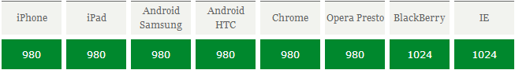
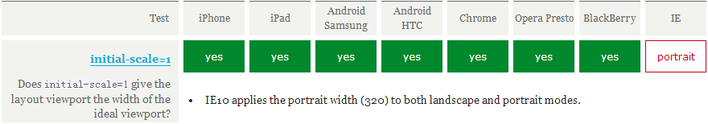

モバイルデバイス上でウェブページの再構築や開発を行うには、まずモバイルデバイス上のviewportをしっかり理解する必要があります。viewportの概念を理解し、viewportに関連するmetaタグの使い方を把握して初めて、私たちのウェブページをさまざまな解像度のモバイルデバイスに適応（レスポンシブ）させることがよりうまくできるようになります。
一、viewportの概念
簡単に言うと、モバイルデバイス上のviewportとは、デバイスの画面上でウェブページを表示するために使用できる領域のことです。より具体的には、ブラウザ（またはアプリ内のwebview）上でウェブページを表示する部分の領域ですが、viewportはブラウザの表示領域のサイズに限定されず、ブラウザの表示領域より大きいこともあれば、小さいこともあります。デフォルトでは、一般的にモバイルデバイス上のviewportはブラウザの表示領域よりも大きくなっています。これは、モバイルデバイスの解像度がデスクトップコンピュータに比べて小さいことを考慮し、従来のデスクトップブラウザ向けに設計されたウェブサイトをモバイルデバイス上でも正常に表示できるようにするためです。そのため、モバイルデバイスのブラウザはデフォルトのviewportを980pxや1024px（または他の値。デバイス自身が決定します）に設定しています。しかしその結果、ブラウザの表示領域の幅はこのデフォルトのviewportの幅よりも小さいため、水平スクロールバーが表示されることになります。下の図は、いくつかのデバイスにおけるブラウザのデフォルトのviewportの幅を示しています。

二、CSSにおける1pxはデバイスの1pxと等しくない
CSSでは通常pxを単位として使用します。デスクトップブラウザでは、CSSの1ピクセルは多くの場合、コンピュータ画面の1物理ピクセルに対応しています。このことから、CSSのピクセルはデバイスの物理ピクセルであるという錯覚を抱くかもしれません。しかし実際はそうではありません。CSSのピクセルは単なる抽象的な単位であり、異なるデバイスや異なる環境では、CSSの1pxが表すデバイス物理ピクセルは異なります。デスクトップブラウザ向けに設計されたウェブページでは、このことを細かく気にする必要はありませんが、モバイルデバイスではこの点を理解しなければなりません。初期のモバイルデバイスでは、画面のピクセル密度は比較的低く、例えばiPhone 3では解像度が320x480でした。iPhone 3では、1つのCSSピクセルは確かに1つの画面物理ピクセルに等しかったのです。その後、技術の発展に伴い、モバイルデバイスの画面ピクセル密度はますます高くなりました。iPhone 4から、AppleはいわゆるRetinaディスプレイを発表し、解像度は2倍の640x960になりましたが、画面サイズは変わりませんでした。つまり、同じサイズの画面にピクセルが2倍になったということです。このとき、1つのCSSピクセルは2つの物理ピクセルに等しくなります。他のブランドのモバイルデバイスも同じ理屈です。例えば、Androidデバイスは画面のピクセル密度に応じてldpi、mdpi、hdpi、xhdpiなどの異なるレベルに分類され、解像度もさまざまです。Androidデバイス上の1つのCSSピクセルが何個の画面物理ピクセルに相当するかは、デバイスによって異なり、定説はありません。
CSSにおけるpxの変化を引き起こすもう一つの要因として、ユーザーのズームがあります。例えば、ユーザーがページを2倍に拡大すると、CSSの1pxが表す物理ピクセルも2倍になります。逆に、ページを2分の1に縮小すると、CSSの1pxが表す物理ピクセルも半分になります。この点については、記事の後半でも説明します。
モバイルブラウザおよび一部のデスクトップブラウザでは、windowオブジェクトにdevicePixelRatioプロパティがあります。その公式の定義は、デバイス物理ピクセルとデバイス独立ピクセルの比率、すなわち devicePixelRatio = 物理ピクセル / 独立ピクセル です。CSSのpxはデバイスの独立ピクセルと見なすことができるので、devicePixelRatioを通じて、そのデバイス上で1つのCSSピクセルが何個の物理ピクセルを表すかを知ることができます。例えば、RetinaディスプレイのiPhoneでは、devicePixelRatioの値は2であり、つまり1つのCSSピクセルは2つの物理ピクセルに相当します。ただし注意すべき点として、devicePixelRatioはブラウザによっては互換性の問題がまだ多少あるため、現在はこの値を完全に信頼することはできません。具体的な状況は次の記事を参照してください。この記事。
devicePixelRatioのテスト結果：

三、PPKによる3つのviewportに関する理論
ppkの達人モバイルデバイス上のviewportについて非常に多くの研究を行っています（第1篇，第2篇，第3篇）。興味のある方は読んでみてください。本記事の多くのデータや見解もそこから引用しています。ppkは、モバイルデバイスには3つのviewportがあると考えています。
まず、モバイルデバイス上のブラウザは、モバイルデバイス向けに設計されていないサイトであっても、すべてのウェブサイトを正常に表示できなければならないと考えています。しかし、ブラウザの表示領域をviewportとした場合、モバイルデバイスの画面はあまり広くないため、デスクトップブラウザ向けに設計されたウェブサイトをモバイルデバイスで表示すると、viewportが狭すぎてコンテンツがぎゅうぎゅうに詰め込まれ、レイアウトが崩れてしまうこともあります。もしかすると、「今は解像度の非常に高いスマートフォンがたくさんあるではないか。例えば768x1024や1080x1920といった解像度のスマホなら、デスクトップブラウザ向けのサイトを表示しても問題ないのでは？」と疑問に思う人もいるかもしれません。先に述べたように、CSSの1pxは画面上の1pxを表すわけではありません。解像度が高ければ高いほど、CSSの1pxが表す物理ピクセルは多くなり、devicePixelRatioの値も大きくなります。これは理解しやすいでしょう。解像度が上がっても画面サイズはそれほど大きくならないため、CSSの1pxがより多くの物理ピクセルを表すようにして、低解像度デバイスと画面上での1pxの大きさをほぼ同じにする必要があるからです。そうしないと、小さすぎて見えなくなってしまいます。そのため、1080x1920のようなデバイスでは、デフォルトの状態で、divの幅を300数px（devicePixelRatioの値による）に設定するだけで、画面いっぱいの幅になります。本題に戻ると、モバイルデバイス上のブラウザの表示領域をviewportにすると、viewportが狭すぎて表示が乱れるサイトが出てくるため、これらのブラウザはデフォルトではviewportを980pxなどの広めの値に設定することにしました。これにより、デスクトップ向けに設計されたサイトでもモバイルブラウザで正常に表示できます。ppkは、このブラウザのデフォルトのviewportを「layout viewport」と呼んでいます。このlayout viewportの幅は、document.documentElement.clientWidth で取得できます。
しかし、layout viewportの幅はブラウザの表示領域の幅よりも大きいため、ブラウザの表示領域のサイズを表す別のviewportも必要です。ppkはこのviewportを「visual viewport」と呼んでいます。visual viewportの幅は window.innerWidth で取得できますが、Android 2、Opera mini、UC 8では正しく取得できません。

これで、layout viewport と visual viewport の2つのviewportがあります。しかし、ブラウザはまだ十分ではないと考えています。なぜなら、現在ではモバイルデバイス向けに個別に設計されたウェブサイトがますます増えているため、モバイルデバイスに完全に適合できるviewportも必要だからです。いわゆる「完全な適合」とは、まずユーザーがズームや水平スクロールバーを操作しなくても、ウェブサイトのすべてのコンテンツを正常に閲覧できることです。第二に、表示される文字の大きさが適切であることです。例えば14pxの文字が、高密度ピクセル画面では小さすぎて読めないということがないように、理想としては、この14pxの文字はどのような密度の画面、どのような解像度でも、表示される大きさがほぼ同じであることです。もちろん、文字だけでなく、画像などの他の要素も同様です。ppkはこのviewportを「ideal viewport」と呼んでいます。つまり、3つ目のviewportであり、モバイルデバイスにとって理想的なviewportです。
ideal viewportには固定のサイズはなく、デバイスごとに異なるideal viewportを持っています。すべてのiPhoneのideal viewportの幅は320pxです。画面幅が320であっても640であっても同じです。つまり、iPhoneでは、CSSの320pxがiPhoneの画面の幅を表すということです。


しかし、Androidデバイスはより複雑で、320pxのもの、360pxのもの、384pxのものなどがあります。異なるデバイスのideal viewportの幅がどれくらいなのかは、次のサイトに行ってhttp://viewportsizes.com確認してみてください。そこには多くのデバイスの理想的な幅が収集されています。
改めてまとめると：ppkはモバイルデバイス上のviewportをlayout viewport、visual viewport、ideal viewportの3種類に分類している。このうちideal viewportはモバイルデバイスに最も適したviewportであり、ideal viewportの幅はモバイルデバイスの画面幅に等しい。CSSで特定の要素の幅をideal viewportの幅（単位はpx）に設定すれば、その要素の幅はデバイス画面の幅になり、つまり幅100%の効果になる。ideal viewportの意義は、どのような解像度の画面でも、ideal viewportに合わせて設計されたWebサイトは、ユーザーが手動でズームする必要も、横スクロールバーが表示されることもなく、完璧にユーザーに表示できることにある。
四、metaタグを利用してviewportを制御する
モバイルデバイスのデフォルトのviewportはlayout viewport、つまり画面よりも幅の広いviewportである。しかしモバイルデバイス向けWebサイトを開発する際には、ideal viewportが必要になる。では、どうすればideal viewportを取得できるのか？そこで登場するのがmetaタグである。
モバイルデバイス向けWebサイトを開発するとき、最も一般的な操作は次のコードをheadタグにコピーすることだ。
<meta name="viewport" content="width=device-width, initial-scale=1.0, maximum-scale=1.0, user-scalable=0">
このmetaタグの役割は、現在のviewportの幅をデバイスの幅に等しくし、同時にユーザーの手動ズームを許可しないことである。ユーザーのズームを許可するかどうかはWebサイトによって異なる要件があるかもしれないが、viewportの幅をデバイスの幅に等しくすることは、誰もが望む効果だろう。もしこのように設定しなければ、画面よりも広いデフォルトのviewportが使用され、つまり横スクロールバーが表示されることになる。
このname="viewport"のmetaタグには一体何があり、それぞれどんな役割があるのだろうか？
meta viewportタグは、まずAppleがそのSafariブラウザで導入したもので、モバイルデバイスのviewport問題を解決することを目的としていた。その後、Androidや各ブラウザベンダーもそれに倣い、meta viewportへの対応を導入した。実際、これは非常に有用であることが証明されている。
Appleの仕様では、meta viewportには6つの属性がある（とりあえずcontent内のものをそれぞれ属性と値と呼ぶ）。以下のとおり。
| width | 設定layout viewportの幅。正の整数、または文字列"width-device" |
| initial-scale | ページの初期ズーム値を設定する。数値で、小数も可。 |
| minimum-scale | ユーザーに許可される最小ズーム値。数値で、小数も可。 |
| maximum-scale | ユーザーに許可される最大ズーム値。数値で、小数も可。 |
| height | 設定layout viewportの高さ。この属性はそれほど重要ではなく、ほとんど使われない。 |
| user-scalable | ユーザーによるズームを許可するかどうか。値は"no"または"yes"で、noは許可しない、yesは許可するを意味する。 |
これらの属性は同時に使用できるほか、単独または組み合わせて使用できる。複数の属性を同時に使用する場合は、カンマで区切るだけでよい。
さらに、Androidではtarget-densitydpiというプライベート属性もサポートされている。これは対象デバイスの密度レベルを示し、CSSの1pxが何ピクセルの物理ピクセルを表すかを決定する役割を持つ。
| target-densitydpi | 値は数値、または high-dpi、medium-dpi、low-dpi、device-dpi という文字列のいずれか。 |
特に説明すると、target-densitydpi=device-dpi の場合、CSSの1pxは物理ピクセルの1pxに等しくなる。
この属性はAndroidのみがサポートしており、しかもAndroidは廃止することを決定している。target-densitydpiこの属性は、使用を避けるべきである。
五、現在のviewportの幅をideal viewportの幅に設定する
ideal viewportを得るには、デフォルトのlayout viewportの幅をモバイルデバイスの画面幅に設定しなければならない。meta viewportのwidthはlayout viewportの幅を制御できるので、widthを特別な値であるwidth-deviceに設定するだけでよい。
<meta name="viewport" content="width=device-width">
下の図は、このコードの各モバイルブラウザでのテスト結果である。

width=device-widthによって、すべてのブラウザが現在のviewport幅をideal viewportの幅にできることがわかる。ただし注意すべき点として、iPhoneとiPadでは、縦画面でも横画面でも、幅は縦画面時のideal viewportの幅になる。
この書き方は誰でもできそうに見える。「豚肉を食べたことがなくても、豚が走るのを見たことはあるだろう」というたとえの通りだ。確かに、モバイルデバイス向けのWebページを開発するとき、viewportとは何かを理解しているかどうかに関わらず、この1行のコードだけで十分かもしれない。
しかし、あなたはきっと知らないだろう。
<meta name="viewport" content="initial-scale=1">
このコードも前のコードと同じ効果を達成でき、現在のviewportをideal viewportに変えることができる。
ふふっ、驚いただろう。理論的には、このコードの役割は現在のページをズームしないこと、つまりページは本来のサイズのままで表示されることだけだからだ。では、なぜwidth=device-widthと同じ効果が得られるのだろうか？
このことをはっきりさせるには、まずこのズームが何を基準にして行われるのかを理解する必要がある。ここでのズーム値は1、つまりズームなしなのに、ideal viewportの効果が得られている。したがって、答えはただ一つ、ズームはideal viewportを基準にして行われるのである。ideal viewportを100%でズームする、つまりズーム値が1のとき、ideal viewportが得られるではないか。実際、その通りである。下の図は、各モバイルブラウザで次のように設定した場合のテスト結果である。<meta name="viewport" content="initial-scale=1"> と設定した後に、現在のviewport幅をideal viewportの幅にできるかどうかのテスト結果である。

テスト結果によると、initial-scale=1でも現在のviewport幅をideal viewportの幅にできる。しかし今回は、Windows PhoneのIEが、縦画面でも横画面でも、幅を縦画面時のideal viewportの幅に設定した。だが、この小さな欠点はほとんど問題にならない。
しかし、widthとinitial-scale=1が同時に現れ、しかも衝突が発生したらどうなるだろうか？例えば次のような場合だ。
<meta name="viewport" content="width=400, initial-scale=1">
width=400は現在のviewportの幅を400pxに設定することを意味し、initial-scale=1は現在のviewportの幅をideal viewportの幅に設定することを意味する。では、ブラウザはどちらの命令に従うべきだろうか？後ろに書かれている方だろうか？いや、違う。このような場合、ブラウザは2つの値のうち大きい方を採用する。例えば、width=400でideal viewportの幅が320の場合、400が採用される。width=400でideal viewportの幅が480の場合、ideal viewportの幅が採用される。（追記：UC9ブラウザでは、initial-scale=1のとき、width属性の値が何であっても、viewportの幅は常にideal viewportの幅になる）
最後にまとめると、現在のviewport幅をideal viewportの幅に設定するには、width=device-widthを設定するか、initial-scale=1を設定すればよい。しかし、この2つにはそれぞれ小さな欠点がある。それは、iPhone、iPad、およびIEでは縦画面と横画面を区別せず、すべて縦画面時のideal viewport幅が基準になることだ。したがって、最も完璧な書き方は、両方を記述することである。そうすれば、initial-scale=1がiPhone、iPadの問題を解決し、width=device-widthがIEの問題を解決する。
<meta name="viewport" content="width=device-width, initial-scale=1">
六、meta viewportに関するさらなる知識
1、ズームおよびinitial-scaleのデフォルト値について
まずズームの問題について考えてみよう。前述のとおり、ズームはideal viewportを基準にして行われる。ズーム値が大きいほど、現在のviewportの幅は小さくなり、その逆も同様である。例えばiPhoneでは、ideal viewportの幅は320pxである。initial-scale=2と設定すると、viewportの幅はわずか160pxになる。これも理解しやすいだろう。2倍に拡大するということは、元の1pxのものが2pxになるということだ。しかし、1pxが2pxになることは、元の320pxが640pxになるということではない。実際の幅が変わらないまま、1pxが元の2pxと同じ長さになるということだ。したがって、2倍に拡大すると、もともと320pxで埋めていた幅は、160pxで済むようになる。よって、次の公式を導き出すことができる。
visual viewport宽度 = ideal viewport宽度 / 当前缩放值 当前缩放值 = ideal viewport宽度 / visual viewport宽度
ps:visual viewportの幅は、ブラウザの表示領域の幅を指す。
ほとんどのブラウザはこの理論に当てはまるが、Androidの標準ブラウザとIEには少し問題がある。Android標準のwebkitブラウザは、initial-scale=1かつwidth属性が設定されていない場合にのみ正常に動作し、つまりこの理論はほとんど当てはまらない。一方、IEはinitial-scale属性をまったく無視し、何を設定してもinitial-scaleの効果は常に1のままである。
さて、次に initial-scale のデフォルト値の問題について説明します。つまり、この属性を書かない場合、そのデフォルト値はいくつになるでしょうか？明らかに1ではありません。なぜなら initial-scale = 1 の場合、現在の layout viewport の幅は ideal viewport の幅に設定されますが、前述のとおり、各ブラウザのデフォルトの layout viewport 幅は通常 980 や 1024 や 800 などといった値であり、最初から ideal viewport の幅になることはないからです。したがって、initial-scale のデフォルト値は確実に1ではありません。Android デバイス上の initial-scale のデフォルト値を取得する方法はないようで、あるいはそもそもデフォルト値がなく、明示的に記述しないと機能しないのかもしれません。それはひとまず置いておき、ここでは iPhone と iPad の initial-scale のデフォルト値について重点的に説明します。
テストによると、iPhone と iPad では次の結論が得られます。つまり、layout viewport に設定する幅がどれだけであっても、初期のズーム値が指定されていない場合、iPhone と iPad は initial-scale の値を自動的に計算し、現在の layout viewport の幅がズーム後にブラウザの表示領域の幅と一致するようにします。つまり、横方向のスクロールバーが表示されないということです。たとえば、iPhone で viewport の meta タグを一切設定しない場合、このとき layout viewport の幅は 980px ですが、ブラウザに横方向のスクロールバーが表示されず、ブラウザがデフォルトでページを縮小していることがわかります。上記の公式によると、現在のズーム値 = ideal viewport幅 / visual viewport幅、次のように導き出せます：
当前缩放值 = 320 / 980
つまり、現在の initial-scale のデフォルト値は 0.33 程度になるはずです。initial-scale の値を指定すると、このデフォルト値は機能しなくなります。
とにかく、この結論だけ覚えておけば大丈夫です。iPhone と iPad では、viewport に設定する幅がどれだけであっても、デフォルトのズーム値が指定されていなければ、iPhone と iPad が自動的にこのズーム値を計算し、現在のページに横方向のスクロールバーが表示されない（言い換えれば、viewport の幅が画面の幅になる）ようにします。


2、meta viewportタグを動的に変更する
1つ目の方法
document.write を使用して meta viewport タグを動的に出力できます。例：
document.write('<meta name="viewport" content="width=device-width,initial-scale=1">')
2つ目の方法
setAttribute を使用して変更する
<meta id="testViewport" name="viewport" content="width = 380">
<script>
var mvp = document.getElementById('testViewport');
mvp.setAttribute('content','width=480');
</script>
Android 2.3 標準ブラウザにおけるバグ
<meta name="viewport" content="width=device-width"> <script type="text/javascript"> alert(document.documentElement.clientWidth); //弹出600，正常情况应该弹出320 </script> <meta name="viewport" content="width=600"> <script type="text/javascript"> alert(document.documentElement.clientWidth); //弹出320，正常情况应该弹出600 </script>
テストした携帯電話の ideal viewport の幅は 320px です。最初にポップアップ表示された値は 600 ですが、この値は2行目の meta タグの結果であるはずです。そして2回目にポップアップ表示された値は 320 で、これこそが1行目の meta タグによる効果です。したがって、Android 2.3（おそらくすべての2.xバージョン）の標準ブラウザでは、meta viewport タグを上書きまたは変更すると、非常に混乱させる結果になります。
七、結び
たくさんの無駄話をしましたが、最後に少し役に立つことをまとめておく必要があります。
まず、meta viewport タグを設定しない場合、モバイルデバイス上のブラウザのデフォルトの幅は 800px、980px、1024px などとなり、要するに画面の幅よりも大きくなります。ここでの幅に使われる単位 px はすべて CSS における px を指しており、実際の画面の物理ピクセルを表す px とは別物です。
第二に、すべてのモバイルデバイスのブラウザには理想的な幅があります。この理想的な幅は CSS における幅を指し、デバイスの物理的な幅とは関係ありません。CSS では、この幅は 100% が表す幅に相当します。meta タグを使用して viewport の幅をその理想的な幅に設定できます。デバイスの理想的な幅がいくつかわからない場合は、device-width という特別な値を使えばよいです。同時に initial-scale=1 にも viewport の幅を理想的な幅に設定する効果があります。したがって、次を使用できます。
<meta name="viewport" content="width=device-width, initial-scale=1">
理想的な viewport（前述の ideal viewport）を得ることができます。
なぜ理想的な viewport が必要なのでしょうか？たとえば、解像度が 320x480 の携帯電話の理想的な viewport の幅は 320px ですが、画面サイズが同じで解像度が 640x960 の別の携帯電話の理想的な viewport の幅も 320px です。では、なぜ解像度が高いこの携帯電話の理想的な幅が、解像度が低いあの携帯電話の理想的な幅と同じなのでしょうか？それは、こうすることで初めて、同じ Web サイトが異なる解像度のデバイスでも同じように、あるいはほぼ同じように見えることを保証できるからです。実際、現在の市場には非常に多くの種類・ブランド・解像度の携帯電話がありますが、それらの理想的な viewport の幅は結局 320、360、384、400 などの数種類にすぎず、すべて非常に近い値です。理想的な幅が近いということは、あるデバイスの理想的な viewport に合わせて作った Web サイトが、他のデバイスでも大きな差なく表示され、場合によってはまったく同じように表示されることを意味します。
原文アドレス：https://www.cnblogs.com/2050/p/3877280.html
クリックしてノートを共有
<p style="font-size:14px;">ノートは本記事の内容を拡張したものである必要があります！</p><br> <p style="font-size:12px;"><a href="../tougao.html" target="_blank">記事の投稿は、ここをクリック</a></p> <p style="font-size:14px;"><a href="./runoob-user-test-intro.html" target="_blank">登録招待コードの取得方法</a></p> <h3 class="text-muted"><i class="fa fa-info-circle" aria-hidden="true"></i> ノートを共有する前に<a href=".." class="runoob-pop">ログイン</a>が必要です！</h3> <p><a href="./runoob-user-test-intro.html" target="_blank">登録招待コードの取得方法</a></p>